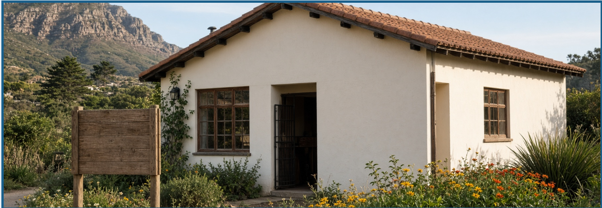

Our story
We started with a simple mission: to give vulnerable animals safety, stability and a chance to heal.
Paws & Hearts began in 2014 when a small group of animal lovers in Observatory started fostering stray and abandoned pets. Since then, we have grown into a registered non-profit rescue organisation with a shelter in Observatory and an adoption centre in Stellenbosch.

We started with a simple mission: to give vulnerable animals safety, stability and a chance to heal.
We work with foster carers, volunteers and local supporters to create a network of care around every rescue.
Every animal in our care is treated with kindness, respect and a tailored plan for recovery.